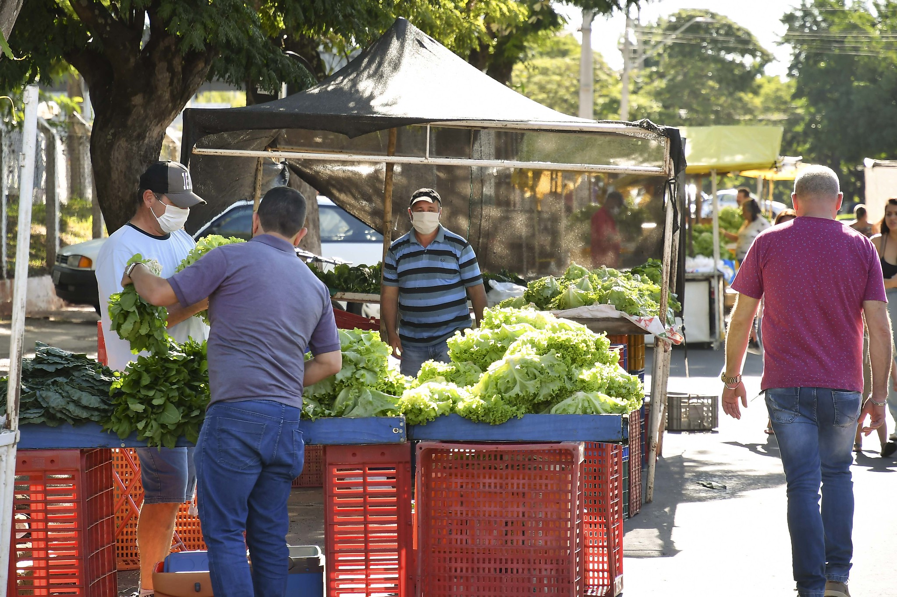
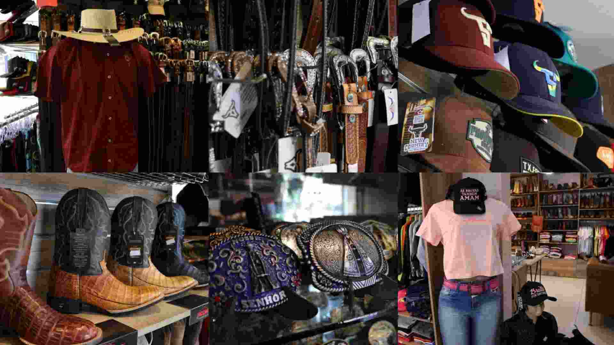
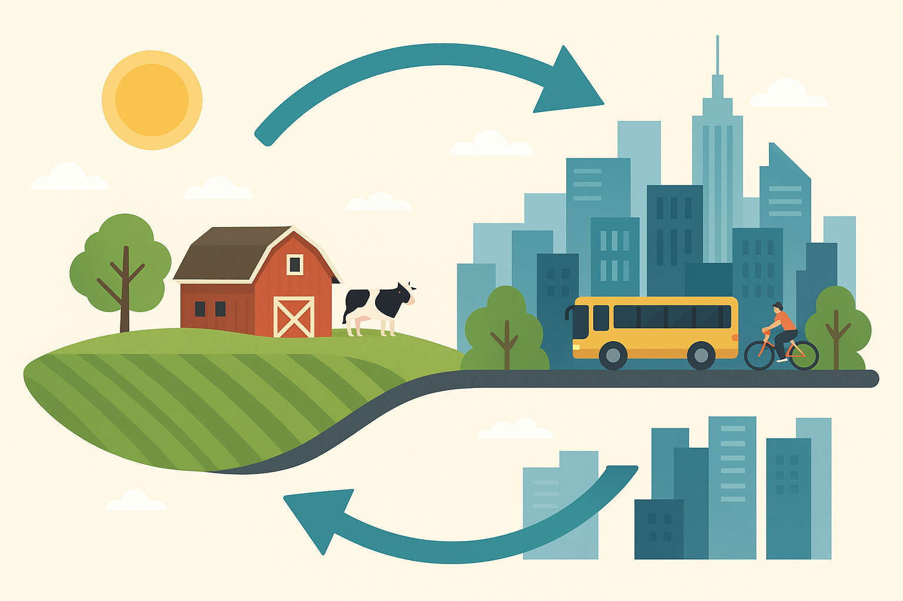
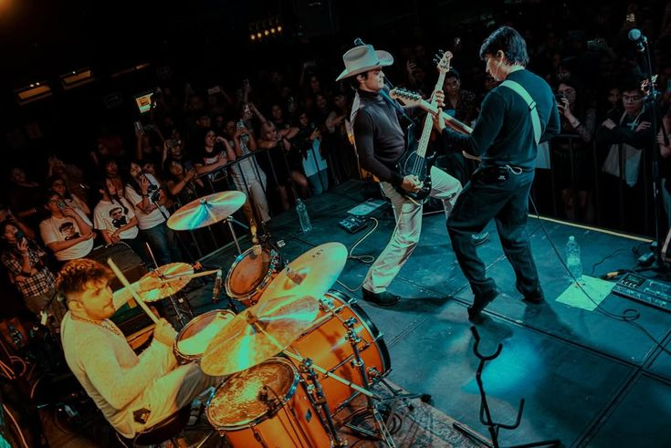
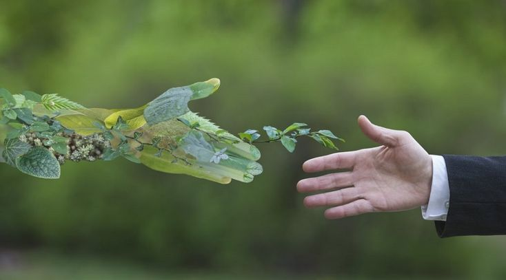

🛒 Comida
Os alimentos consumidos na cidade vêm do campo. A produção rural abastece supermercados e feiras. A demanda urbana também influencia o que é cultivado, como a busca por alimentos orgânicos e sustentáveis.
 👚 Roupas
Matérias-primas como algodão, couro e lã vêm do campo. Ao mesmo tempo, tendências urbanas influenciam o vestuário rural. Há troca de referências visuais e culturais entre os dois espaços.
 🚜 Tecnologia
Máquinas agrícolas e softwares de gestão vêm da cidade e são aplicados no campo. Por outro lado, estruturas como usinas eólicas e solares que sustentam a tecnologia urbana estão em áreas rurais.
📦 Trabalho e Economia
O campo fornece produtos que movimentam o comércio urbano. Já a cidade é o mercado consumidor. Algumas pessoas moram no campo e trabalham na cidade, criando uma ponte entre os dois ambientes.
 🎶 Cultura
Elementos culturais como festas juninas e a música sertaneja migram do campo para a cidade. Ao mesmo tempo, jovens do campo consomem funk, pop e outros gêneros urbanos via internet.
 🌱 Sustentabilidade
O interesse por práticas sustentáveis aproxima campo e cidade. A agricultura sustentável cresce no campo, enquanto nas cidades surgem hortas comunitárias e feiras de produtores locais.
